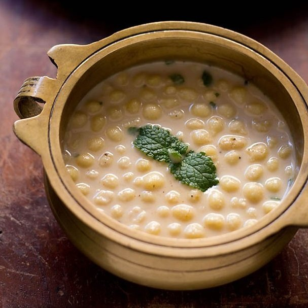

Boondi Raita

Description
Raita is a very important part of elaborate Indian meals and of them, boondi raita is the most popular. Crunchy boondi adds a delicious crunchy to the smooth spiced yogurt. Whether you are having it along with simple dal rice of with rotis a raita will always add to your meal. With a biryani it is an essential!
Ingredients
- Boondi 100 grams
- Yogurt 1 cup
- Salt to taste
- Roasted cumin powder 1/2 teaspoon
- Fresh coriander leaves 2 tablespoons
- Red chilli powder 1/2 teaspoon
Steps
- Whisk yogurt till smooth. Add salt, half the roasted cumin seed powder and half the chopped coriander leaves.Add boondi and mix well.
- Garnish with the remaining roasted cumin seed powder, coriander leaves and red chilli powder and serve chilled.
Credits:Recipe and description completely copied from here.